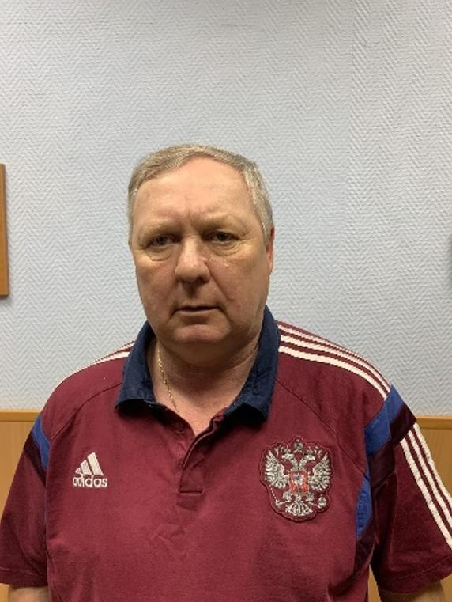
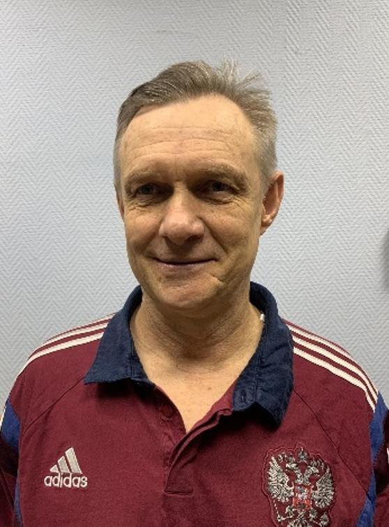
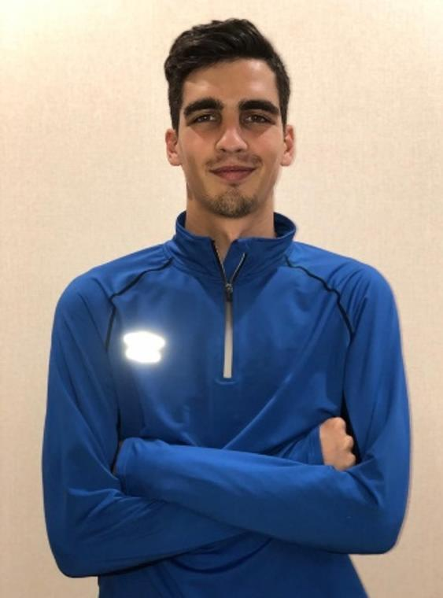
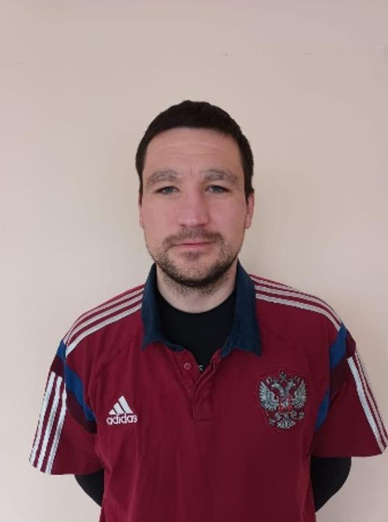

Старший тренер - Удалов Вячеслав Владимирович (стаж тренерской
работы - 27 лет). Его воспитанники - футболисты сборных молодежных
команд Москвы и России, мастера спорта, чемпионы России,
обладатели Кубка УЕФА.

Тренер - консультант - Комаров Андрей Анатольевич. Играл в
командах 2-й, 1-й и Высшей Лиги Первенства СССР и России. Стаж
тренерской работы - 25 лет. 1995 год - его команда - обладатель 1
Кубка кубков УЕФС по футзалу. 1996 год - 2-е место в Кубке
Чемпионов Европы по футзалу.
Тренер - Лапин Иван Александрович. Мастер спорта. Чемпион России
2008 года. Обладатель Кубка УЕФА. Стаж тренерской работы - 9 лет.
Карьера футболиста: ФК СпортАкадемклуб г. Москва, ФК Зенит г.
Санкт-Петербург, ФК Ростов г. Ростов-на-Дону, ПФК Спартак Нальчик
г. Нальчик, ФК Балтика г. Калининград.
Тренер - Микаилова Эсмира Афгановна. Карьера футболистки:
двукратная чемпионка Москвы, двукратный серебряный призёр г.
Москвы. Серебряный призёр турнира по Мини-футболу памяти Деяка
И.А., бронзовый призёр Всероссийского первенства континентальной
футбольной Лиги. Стаж тренерской работы - 5 лет.

Тренер вратарей - Оганджанян Роман Вячеславович. Двукратный
чемпион 3 лиги России, обладатель кубка Москвы, Чемпион России
среди университетов, участник универсиады в составе сборной
России. Стаж тренерской работы - 5 лет.

Тренер - Солдатов Дмитрий Александрович. Неоднократный чемпион г.
Москвы. Воспитанники - участники 1-й и Клубной Лиг, сборной г.
Москвы. Стаж тренерской работы - 15 лет.